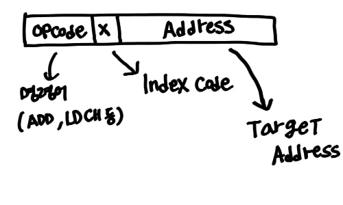

SIC 머신이란
SIC 머신이란 Simplified Instructional Computer 즉, 간략화된 교육용 컴퓨터입니다. 간략화되어서 메모리도 작고 1 Word도 3 Bytes 밖에 안되며 정수만 지원하는 등 기능이 제한되어 있습니다.
Memory
컴퓨터에서 연산이 일어나는 기본 단위를 word라고 합니다. 컴퓨터에서 수행하는 명령이 1 Word로 구성되고, 연산도 1 Word 단위로 일어납니다. 32bit 컴퓨터의 경우 한 명령이 32 bits로 이루어지게 됩니다.
SIC 머신은 1 Word = 3 bytes(24bits)를 사용합니다.
총 메모리랑은 32,768(2^15) bytes이며, memory 주소는 Byte 단위로 주소가 붙습니다.
즉 SIC 머신의 메모리 주소는 0x0000~0x7FFF 까지 존재하는 거죠.
1 Word가 3 Bytes 이기 때문에 ADD 0500 같은 명령이 일어나면 메모리에서 0500 ~ 0502까지의 값을 읽고 사용하게 됩니다.
Registers
SIC 머신은 각기 다른 용도의 레지스터 5개로 이루어집니다. 한 레지스터의 크기는 1 Word 입니다.
| 레지스터 이름 | 레지스터 번호 | 레지스터 용도 |
|---|---|---|
| A | 0 | Accumulator, 계산 결과를 임시저장하는 레지스터 |
| X | 1 | index register, loop을 지원하기 위해 존재하는 레지스터 |
| L | 2 | Linkage register, return을 지원하기 위해 존재하는 레지스터 |
| PC | 8 | Program Counter, 수행할 명령어를 가리키기 위해 존재하는 레지스터 |
| SW | 9 | Status word, 다양한 상태 Flag들을 저장하는 CC 레지스터를 포함합니다 |
SW는 나중에 설명하겠지만, 각 비트가 의미하는 정보가 다르게 구성되어 분기, 루프 등등의 기능에 사용되는 레지스터입니다. ex) zero flag -> 연산 결과가 0이면 1, 아니면 0이 된다.
데이터 구조
정수 지원, 실수는 지원 X
SIC 머신은 실수를 지원하지 않으며, 24bit로 이루어진 정수만 지원합니다. 따라서 쓸 수 있는 정수는 -2^23~2^23-1까지입니다. 음수는 2의 보수를 이용해 표현합니다.
Character 지원
character는 8bit를 사용하며 ASCII code 규칙을 따릅니다. 8bit를 사용하지만 -2^7~2^7-1의 수를 사용하는 것은 아니고 0~2^7-1(=127)까지의 수만 사용하고 1bit는 정보 전달 과정에 생기는 오류를 검출하는 데 사용합니다. 자세한 건
parity bit 을 참고하세요.
명령어 구조
 SIC의 명령어 또한 1 Word로 이루어집니다.
처음 8 bits는 opcode로 ADD, LDCH 등등 각종 명령어를 나타내는 코드가 들어가는 공간입니다.
다음 1bit는 index code로 0 또는 1의 플러그로 이루어집니다. 0인 경우 Direct 모드(직접 주소지정 방식), 1인 경우 Indexed 모드(인덱스 주소지정 방식)입니다.
나머지 15bit는 target address입니다. target address는 명령을 수행할 대상 주소입니다. 15bit이기 때문에 메모리의 모든 address(0x0000~0x7FFF)를 표현할 수 있습니다.
예를 들어 ADD 0x0500이라는 명령어는 다음과 같이 구성됩니다. (ADD opcode = 18)
0001 0010 / 0 / 000 0101 0000 0000
위 명령어는 0x0500~0x0502(1 Word)를 읽어 A register에 더하라는 뜻입니다.
Addressing modes
Index Code에 대해 더 자세히 살펴보겠습니다.
| 모드 | indication | target address |
|---|---|---|
| Direct | x=0 | TA = address |
| Indexed | x=1 | TA = address + (x) |
Direct모드는 index code가 0 값을 가지게 됩니다. 이 경우 target address가 실제 명령을 수행할 주소가 됩니다.
Indexed모드는 index code가 1 값을 가지게 됩니다. 이 경우 target address + (X register의 값) 이 실제 명령을 수행할 주소가 됩니다.
왜 주소를 참조하는 방식이 2가지가 존재할까요? 그 이유는 loop을 지원하기 위해서입니다.
예를 들어 배열에서 i=0~100까지 arr[i]를 더하는 경우 target address를 매번 새로 지정하는 것이 아니라 arr[0]에서 X register만큼 떨어진 주소의 메모리를 참조하고 이 X register의 값을 계속 증가시키는 것이죠.
기본 명령어 수행 구조

크게 5가지의 동작을 수행할 수 있습니다.
- Load) 메모리에서 레지스터로 값을 불러오는 행위입니다.
- Store) 레지스터의 내용을 메모리에 저장하는 행위입니다.
- Arithmetic&Logical) 산술연산 & 논리연산 입니다.
- Compare & Control) 크다, 작다, 같다 비교 연산 수행과 Jump 연산 입니다.
- I/O) 값을 I/O Device로부터 읽거나 쓰는 행위입니다.
명령어들
Load & Store 메모리로부터 값을 읽어오는 명령, 메모리에 값을 저장하는 명령들입니다. Load) LDA, LDX, LDL, LDCH Store) STA, STX, STL, STCH, STSW
등이 있습니다. LDA의 예를 들면 LoaD A register의 약자로, target address의 값을 1 Word 읽어 A register에 쓴다는 뜻입니다. 비슷하게 LDX, LDL도 해석할 수 있겠죠.
LDCH는 Load CHaracter의 약자로, target address에서 1 Word를 읽는 것이 아닌, 맨 오른쪽 1 Byte를 읽습니다. target address가 500이라면 502번 byte를 읽게 되겠죠? 또한, 읽은 값을 A register에 저장합니다.
STA는 STore A register로 A register의 값을 target address에 저장한다는 뜻입니다. 마찬가지로 STX, STL, STSW를 해석할 수 있습니다. STCH는 LDCH의 Store 버전이라고 생각하면 됩니다. target address에 A register의 맨 오른쪽 1 Byte를 저장합니다.
Arithmetic & Logical 연산 명령어들입니다. ADD, SUB, MUL, DIV, AND, OR, TIX 등이 있습니다. 사용하는 사칙연산, 논리연산은 A register를 사용하고, TIX만 X register를 사용합니다.
사칙연산들은 아실 거라 생각합니다. TIX는 X register를 1 증가시키고, X register의 값과 target address의 값을 비교합니다. 비교한 결과는 CC register에 저장됩니다. X register를 쓴다는 점에서 loop에 사용되는 명령어임을 짐작할 수 있습니다.
Compare & Control 비교 연산인 COMP 명령어가 있습니다. COMP 명령어는 A register의 값과 target address의 값을 비교하고, 결과를 CC register에 저장합니다.
제어 연산인 J 시리즈는 PC register의 값을 변경합니다. J, JLT, JEQ, JGT가 있고, 전부 target address로 jump (PC값을 변경) 하는 명령이지만, 각각 작으면 점프 수행(JLT), 같으면 점프 수행(JEQ), 크면 점프 수행(JGT) 처럼 조건을 붙일 수 있는 명령어도 있습니다. 같은지, 큰지, 작은지 여부는 명령어에 포함되지 않고 CC register를 참조합니다.
JSUB, RSUB는 jump 후 return을 하기 위한 명령어입니다. JSUB의 경우 L register에 현재 PC+1을 저장하고 target address로 PC를 변경합니다. RSUB은 Return을 수행합니다. PC register의 값을 L register의 값으로 변경합니다.
I/O 3가지 명령이 있습니다.
TD, RD, WD
각각 Test Device, Read Data, Write Data입니다. TD는 I/O 장치를 쓰기 전, 사용 가능한지 확인하는 명령입니다. 디바이스가 준비되지 않았다면 CC에 0을 저장하고, 준비됐다면 0이 아닌 값을 저장합니다.
RD, WD는 각각 I/O에 1 Byte를 쓰거나 읽는 명령입니다. read 하는 경우 target address에 Input Device로부터 1 Byte를 읽어서 A register의 마지막 1 Byte에 저장할 것이고, write 하는 경우 A register의 마지막 1 Byte를 읽어 Output Device에게 전달할 것입니다.
1 Word가 아니라 1 Byte 씩 읽고 쓰는 이유는 컴퓨터마다 1 Word의 정의가 다르기 때문에 I/O Device가 모든 컴퓨터에서 동일하게 동작할 수 있기 위해 서 입니다.